Images from LaTeX are also included for comparison.
|
Source |
Temml |
LaTeX |
Comment |
|---|
| 1 | x^2y^2 | | 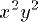 | TeXbook p128 |
| 2 | _2F_3 | | 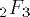 | TeXbook p128 |
| 3 | x+y^2\over k+1 | | 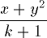 | TeXbook p139 |
| 4 | x+y^{2\over k+1} | |  | TeXbook p139 |
| 5 | a\over{b/2} | | 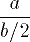 | TeXbook p139 |
| 6 | a_0 + \cfrac{1}{a_1 +
\cfrac{1}{a_2 +
\cfrac{1}{a_3 +
\cfrac{1}{a_4}}}} | | 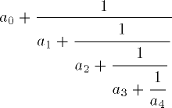 | TeXbook p142 |
| 7 | a_0+{1\over a_1+{1\over
a_2+{1\over a_3+
{1\over a_4}}}} | |  | TeXbook p142 |
| 8 | n\choose {k / 2} | |  | TeXbook p143 |
| 9 | {p \choose 2} x^2 y^{p-2}
| |  | TeXbook p143 |
| 10 | \sum_{\scriptstyle 0 \le
i \le m \atop \scriptstyle
0 < j < n} P(i, j) | |  | TeXbook p145 |
| 11 | x^{2y} | |  | TeXbook p128 |
| 12 | \sum_{i=1}^p
\sum_{j=1}^q
\sum_{k=1}^r
a_{ij}b_{jk}c_{ki} | |  | TeXbook p145 |
| 13 | \sqrt{1+\sqrt{1+\sqrt{1+
\sqrt{1+\sqrt{1+\sqrt{1+
\sqrt{1+x}}}}}}} | |  | TeXbook p145 |
| 14 | \bigg(\frac{\partial^2}
{\partial x^2} + \frac
{\partial^2}{\partial y^2}
\bigg){\big\lvert\varphi
(x+iy)\big\rvert}^2 | | 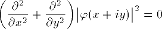 | TeXbook p147 |
| 15 | 2^{2^{2^x}} | | 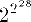 | TeXbook p128 |
| 16 | \int_1^x {dt\over t} | | 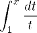 | TeXbook p168 |
| 17 | \int\!\!\!\int_D dx,dy | |  | TeXbook p169 |
| 18 | f(x) = \begin{cases}1/3 &
\text{if }0 \le x \le 1;
\\
2/3 & \text{if }3\le x \le
4;\\ 0 &\text{elsewhere.}
\end{cases} | |  | TeXbook p175 |
| 19 | \overbrace{x +\cdots + x}
^{k \text{ times}} | |  | TeXbook p176 |
| 20 | y_{x^2} | |  | TeXbook p128 |
| 21 | \sum_{p\text{ prime}}
f(p)=\int_{t>1} f(t)d\pi(t) | |  | TeXbook p181 |
| 22 | {\underbrace{\overbrace{
\mathstrut a,\dots,a}^{k
,a\rq\text{s}},\overbrace{
\mathstrut b,\dots,b}^{l,
b\rq\text{s}}}_{k+l
\text{ elements}}} | |  | TeXbook p181 |
| 23 | \begin{pmatrix}
\begin{pmatrix}a&b\\c&d
\end{pmatrix} &
\begin{pmatrix}e&f\\g&h
\end{pmatrix} \\ 0 &
\begin{pmatrix}i&j\\k&l
\end{pmatrix}
\end{pmatrix} | | 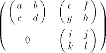 | TeXbook p181 |
| 24 | \det\begin{vmatrix}
c_0&c_1&c_2&\dots& c_n\\
c_1 & c_2 & c_3 & \dots &
c_{n+1}\\ c_2 & c_3 & c_4
&\dots & c_{n+2}\\ \vdots
&\vdots&\vdots & &\vdots
\\c_n & c_{n+1} & c_{n+2}
&\dots&c_{2n}
\end{vmatrix} > 0 | |  | TeXbook p181 |
| 25 | y_{x_2} | | 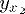 | TeXbook p128 |
| 26 | x_{92}^{31415} + \pi | | 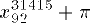 | TeXbook p129 |
| 27 | x_{y^a_b}^{z^c_d} | | 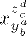 | TeXbook p129 |
| 28 | y_3''' | | 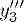 | TeXbook p130 |
| 29 | \lim_{n\rightarrow+\infty}
{\sqrt{2\pi n}\over n!}
\genfrac (){}{}n{e}^n = 1 | | 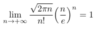 | |
| 30 | \det(A) = \sum_{\sigma
\in S_n} \epsilon(\sigma)
\prod_{i=1}^n
a_{i, \sigma_i} | | 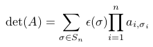 | |